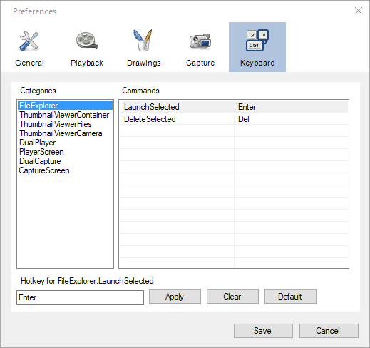

Keyboard¶
General¶
This page lets you view and change the keyboard shortcuts for MotionON internal commands. The shortcuts are grouped in categories based on which part of the user interface the shortcut is active on. The Commands list view displays each command and the corresponding keyboard shortcut.
Modifying a keyboard shortcut¶
To modify a keyboard shortcut select the corresponding category and command in the command list. The existing keyboard shortcut will be displayed in the text box at the bottom left of the page.
Click in the text box and perform the sequence of keys that you wish to use as a replacement shortcut. Click the Apply button to commit the new shortcut to the preferences.
Click the Clear button to remove the existing keyboard shortcut for the active command.
Click the Default button to restore this particular command to its default keyboard shortcut.